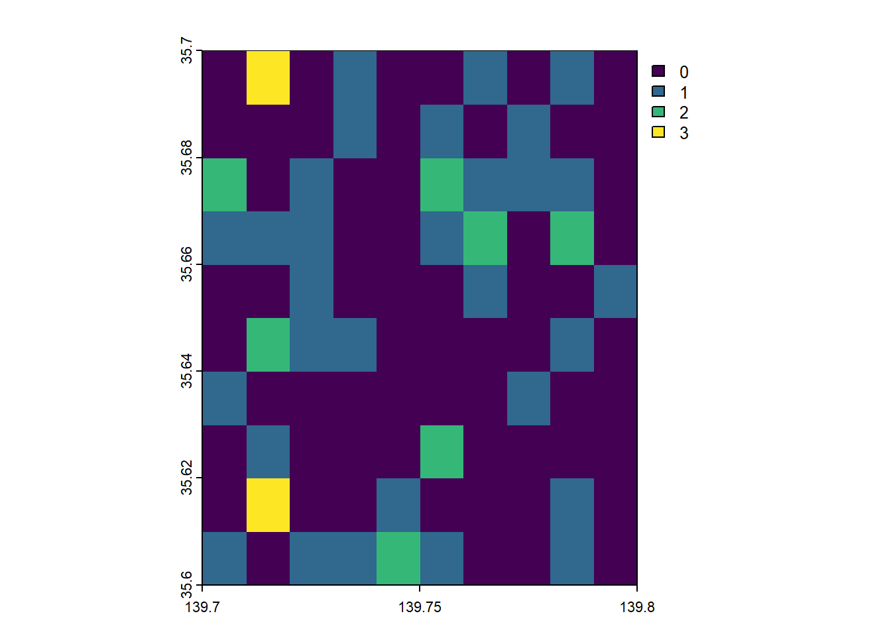
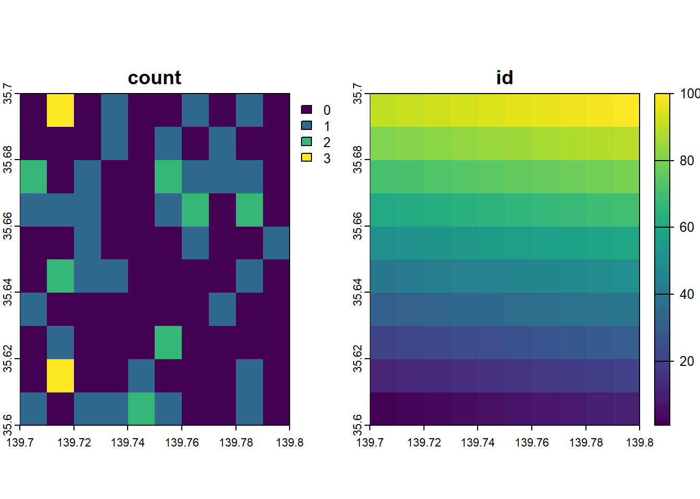

17 地図上の点をラスターで集計する
17.3 地図上の点データの作成
テストデータを作成します。
test_n = 50
p_df = data.frame(
id=seq(1:test_n),
lon=139.7+as.integer(runif(test_n,0,99))/1000,
lat=35.6+as.integer(runif(test_n,0,99))/1000,
value=as.integer(runif(test_n,0,99))
)
p_sf = p_df %>% st_as_sf(coords = c("lon", "lat"),crs=4326)
# p_sf
p_vec = vect(p_sf)
#mapView(p_vec,color="red",col.regions ="red")
leaflet() %>%
addTiles() %>%
addCircles(data=p_sf,col="red")17.4 ラスターで集計する
10x10の集計用ラスタを作成し、rasterizeでcount集計します。
#集計用のBBOXの設定
b_df = data.frame(
lon=c(139.7,139.8),
lat=c(35.6,35.7)
)
b_sf = b_df %>% st_as_sf(coords = c("lon", "lat"),crs=4326)
#Create 10x10 raster
r_s = rast(
ncol=10,nrow=10,
xmin=139.7, xmax=139.8, ymin=35.6, ymax=35.7,
crs = crs(b_sf)
)
r_s## class : SpatRaster
## dimensions : 10, 10, 1 (nrow, ncol, nlyr)
## resolution : 0.01, 0.01 (x, y)
## extent : 139.7, 139.8, 35.6, 35.7 (xmin, xmax, ymin, ymax)
## coord. ref. : lon/lat WGS 84 (EPSG:4326)
#count
pc_r = rasterize(p_vec,r_s,fun="count")
pc_r## class : SpatRaster
## dimensions : 10, 10, 1 (nrow, ncol, nlyr)
## resolution : 0.01, 0.01 (x, y)
## extent : 139.7, 139.8, 35.6, 35.7 (xmin, xmax, ymin, ymax)
## coord. ref. : lon/lat WGS 84 (EPSG:4326)
## source(s) : memory
## name : count
## min value : 1
## max value : 5
17.5 Gridポリゴンの作成
Leafletに出力する場合は、 まず、集計ラスターと同様のst_make_grid()でGridポリゴンを作成します。
sf_grid = st_sf(geometory=st_make_grid(b_sf,n = c(10, 10)),crs=4326)
#gridにidを割り振る
sf_grid$id = seq(1:nrow(sf_grid))
sf_grid## Simple feature collection with 100 features and 1 field
## Geometry type: POLYGON
## Dimension: XY
## Bounding box: xmin: 139.7 ymin: 35.6 xmax: 139.8 ymax: 35.7
## Geodetic CRS: WGS 84
## First 10 features:
## geometory id
## 1 POLYGON ((139.7 35.6, 139.7... 1
## 2 POLYGON ((139.71 35.6, 139.... 2
## 3 POLYGON ((139.72 35.6, 139.... 3
## 4 POLYGON ((139.73 35.6, 139.... 4
## 5 POLYGON ((139.74 35.6, 139.... 5
## 6 POLYGON ((139.75 35.6, 139.... 6
## 7 POLYGON ((139.76 35.6, 139.... 7
## 8 POLYGON ((139.77 35.6, 139.... 8
## 9 POLYGON ((139.78 35.6, 139.... 9
## 10 POLYGON ((139.79 35.6, 139.... 10
leaflet() %>%
addTiles() %>%
addPolygons(data=sf_grid)17.6 Gridポリゴンと集計ラスタを結びつける
gridポリゴンのidを、集計ラスタでrasterizeして、idをカウントしたラスターに結びつけします。
sf_grid_r = rasterize(sf_grid, r_s, "id")
# plot(sf_grid_r)
# sf_grid_r
#id copy to pc_r
pc_r$id = values(sf_grid_r)
plot(pc_r)
17.7 idをキーにしてGridポリゴンに戻す
データフレームにして、idをキーにSFポリゴンをマージします。
pc_df = data.frame(values(pc_r))
pc_df = merge(
pc_df,
sf_grid,
by.x = c("id"),
by.y = c("id"),
all.x = TRUE
)
pc_sf = st_as_sf(pc_df)
pc_sf## Simple feature collection with 100 features and 2 fields
## Geometry type: POLYGON
## Dimension: XY
## Bounding box: xmin: 139.7 ymin: 35.6 xmax: 139.8 ymax: 35.7
## Geodetic CRS: WGS 84
## First 10 features:
## id count geometory
## 1 1 0 POLYGON ((139.7 35.6, 139.7...
## 2 2 0 POLYGON ((139.71 35.6, 139....
## 3 3 0 POLYGON ((139.72 35.6, 139....
## 4 4 0 POLYGON ((139.73 35.6, 139....
## 5 5 0 POLYGON ((139.74 35.6, 139....
## 6 6 1 POLYGON ((139.75 35.6, 139....
## 7 7 1 POLYGON ((139.76 35.6, 139....
## 8 8 1 POLYGON ((139.77 35.6, 139....
## 9 9 0 POLYGON ((139.78 35.6, 139....
## 10 10 0 POLYGON ((139.79 35.6, 139....17.8 Leafletに表示
ここまでできれば、表示できます！
pal = colorNumeric("viridis", domain=c(0:max(pc_sf$count,na.rm=TRUE)))
leaflet() %>%
addTiles() %>%
addPolygons(data=pc_sf,
stroke = FALSE,
fillOpacity = 0.7,
fillColor = ~pal(count)
) %>%
addLegend(data=pc_sf,
position = "bottomright",
values = ~count,
pal = pal,
opacity = 1.0,
title = "count" ,
labFormat = labelFormat()) %>%
addCircles(data=p_sf,col="red") %>%
addScaleBar(position = "bottomleft",scaleBarOptions(imperial = FALSE))